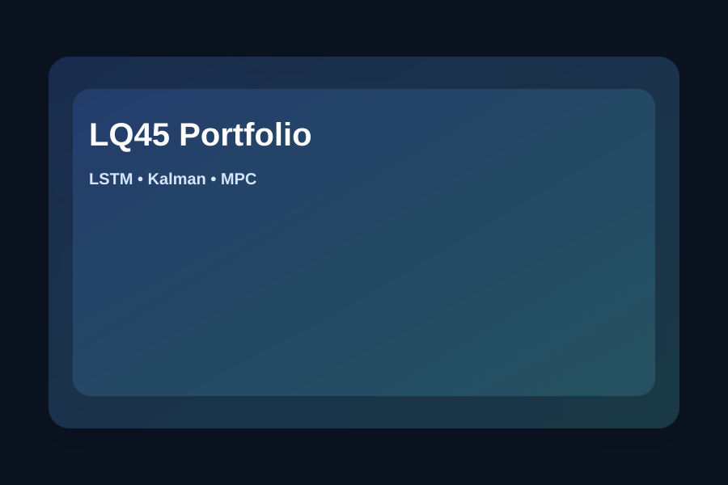

Stock Portfolio Optimization of LQ45 Index (LSTM + Kalman + MPC)
Undergraduate Thesis Project • PyTorch • Time Series
Developed an end-to-end framework for stock portfolio optimization using LSTM-based return prediction, Kalman Filter noise reduction, and Model Predictive Control (MPC) for dynamic asset allocation.

Data: LQ45 stocks (2015–2025) • Index period Feb–Jul 2025.
Thesis Title
Optimasi Portofolio Saham Indeks LQ45 menggunakan Model Predictive Control berdasarkan Hasil Return menggunakan Long Short Term Memory dan Reduce Noise Kalman Filter
Methods
Evaluation metrics include RMSE, Directional Accuracy, Information Coefficient, Sharpe Ratio, and VaR 95%.
Dataset
LQ45 stock data (2015–2025), index period Feb–Jul 2025, and aligned Twitter sentiment data.
Tools
Outcome
Produced predicted returns, denoised signals, and optimized portfolio weights for selected stocks.
Best Model Snapshot (from CV)
MEDC, AKRA, ADMR, MDKA, BBNI with feature combinations and RMSE/DA/IC scoring.